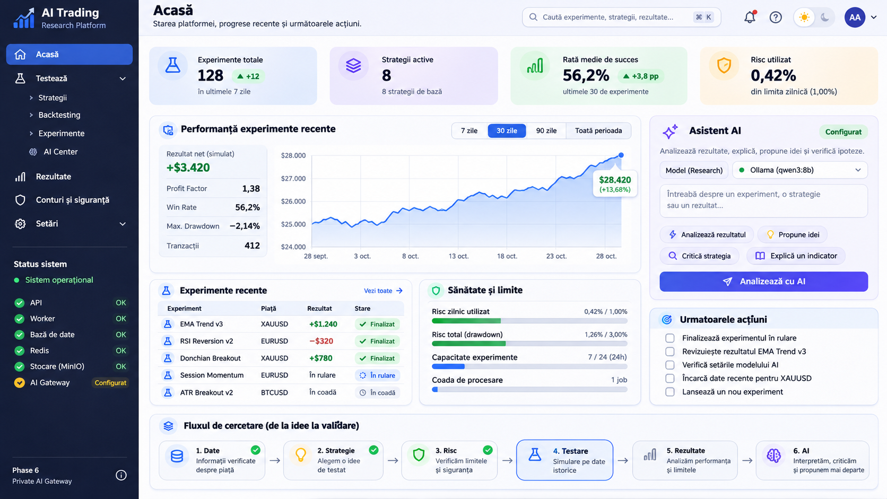
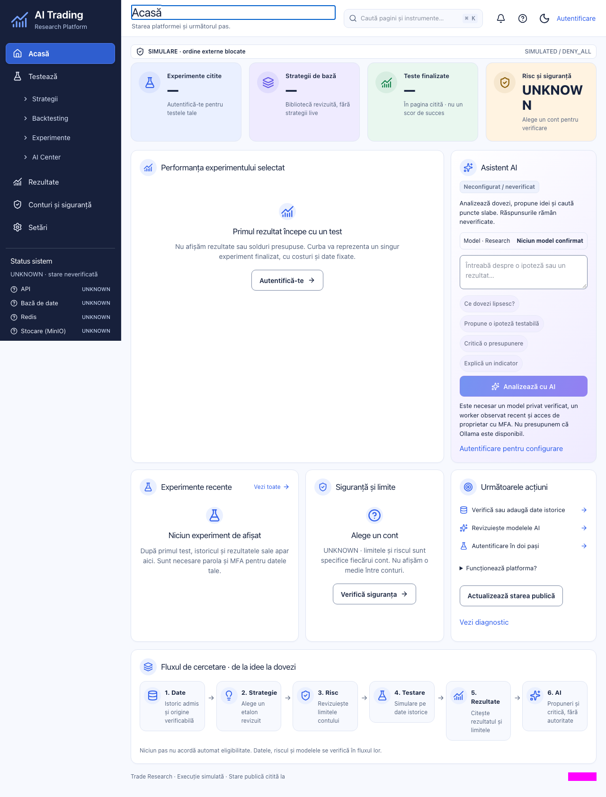
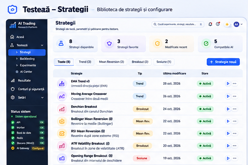
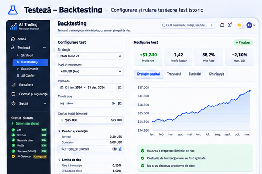
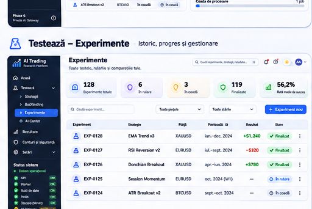
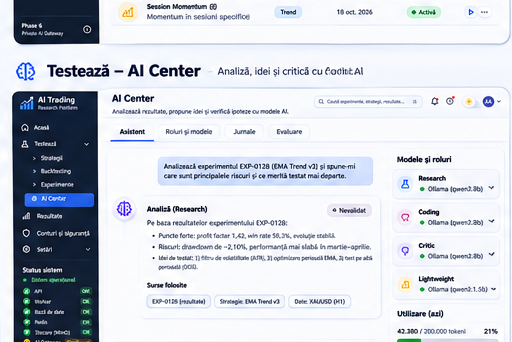
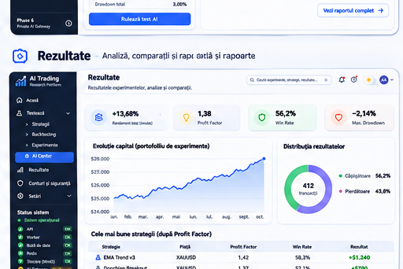
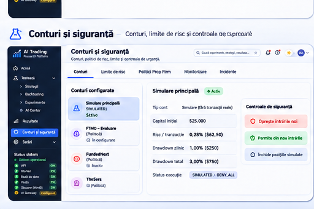
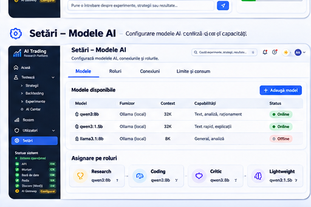
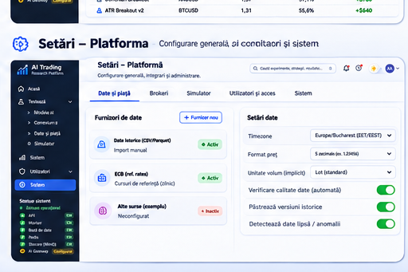

V1 final visual review — acceptance remains open
2026-10-28 · SIMULATED / DENY_ALL · No Phase 7.
One genuine public Home before image is available. The other eight screens, all mobile/dark states and every after image remain unverified. Browser access was denied by managed origin policy. Source and native checks cannot establish visual acceptance.
Full audit and test evidence · Original artifact hashes · Current verification · Preserved owner failure
Approved Home and actual before image
Different viewports and data states: inspect geometry and styling; do not interpret fictional reference values as required output. Open each image for full resolution.

Approved concept · 1672×941 · illustrative data.

Actual before · 1280×1684 full page · signed out, no owned research data. After capture is unavailable.
Supported corrections: separate Home column stacks, compact UNKNOWN label, two-column AI suggestions, smaller shared header inset, and a title-sized visible focus outline. Their rendered effects still require capture.
Older expected UI · Playwright diff against that older UI. This diff is not a comparison with the approved V1 concept and is not a new result.
All nine approved screen references
Acasă
/
Home screenshot inspected before fixes only; no after capture.
Strategii
/testeaza/strategii
Source reviewed; rendered comparison unavailable.
Backtesting
/testeaza/nou
Source reviewed; rendered comparison unavailable.
Experimente
/testeaza/activitate
Source reviewed; rendered comparison unavailable.
AI Center
/testeaza/ai
Source reviewed; rendered comparison unavailable.
Rezultate
/rezultate
Source reviewed; rendered comparison unavailable.
Conturi și siguranță
/conturi/siguranta
Source reviewed; rendered comparison unavailable.
Modele AI
/setari/ai
Source reviewed; rendered comparison unavailable.
Platformă
/setari
Source reviewed; rendered comparison unavailable. No accepted golden reference was rewritten. Exact public candidates require separate owner review after capture.